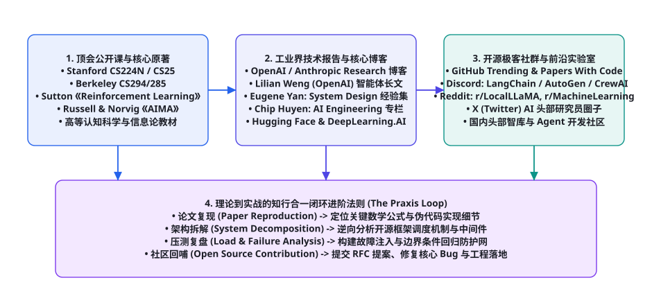
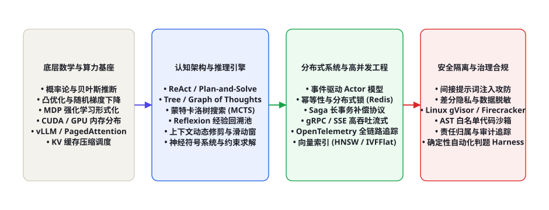

第 108 章 · 学习资源：课程、书籍、博客与社区
人工智能智能体（AI Agents）是一门深度融合了控制论、认知科学、强化学习、分布式工程、编译原理与信息安全的综合交叉学科。在学术热点快速轮动、工业概念频繁更迭与网络碎片化信息泛滥的背景下，盲目跟从零散的社媒推文极易导致开发者陷入“只会调用框架封装 API、遇到底层故障或退化便束手无策”的低维窘境。本章立足于工程实践与第一性原理，系统化构建由全球顶级学术公开课、奠基性理论原著、一线工业界研究博客与开源极客协同网络构成的立体认知资源图谱，并深度拆解自动化文献监控管线与“理论-拆解-压测-回哺”的知行合一认知飞轮，帮助架构师与研究员建立终身演进的深度技术护城河。
面对每周呈指数级增长的论文与开源项目，技术人员的核心壁垒不在于“阅读过多少篇概览”，而在于信息的半衰期过滤能力与逆向工程拆解力。经典控制论与数学原理的半衰期长达数十年，系统架构设计模式的半衰期在数年，而具体的 API 接口与特定提示词巧劲的半衰期往往不足数月。本章的资源梳理严格按照「理论基石（半衰期 > 10年） → 工业规范（半衰期 3~5年） → 生态前沿（高频敏捷迭代）」的三层坐标系展开，确保学习者的每一分智力投入都能转化为长期复合的认知复利。

顶级高校与国际科研机构核心公开课
世界一流学术殿堂的公开课体系之所以无可替代，是因为其课程大纲（Syllabus）凝聚了领域顶尖学者数十年如一日的教学与科研积淀。与碎片化商业教程不同，名校课程具备严格的数学前置依赖链路、循序渐进的形式化推导、以及极具工业杀伤力的大作业（Assignments）。
| 课程编号与开设机构 | 核心主讲与学术背景 | 理论广度与关键覆盖模块 | 编码作业与工业实战硬核度 |
|---|---|---|---|
| Stanford CS25: Transformers United (斯坦福大学) |
Div Garg 等，多位顶尖学者联袂主讲 | 自注意力机制物理本质、大模型架构演化、多模态联合表征、测试期推理计算扩展律。 | 每期直邀前沿顶会一作进行代码与数学细节剖析，聚焦尚未解决的泛化与对齐难题。 |
| UC Berkeley CS294/194: LLM Agents (加州大学伯克利分校) |
Dawn Song 教授等 | 自主规划、ReAct 范式、认知长记忆、多智能体博弈、安全对齐与沙箱防御。 | 极高工程实战度：要求学生从零实现 Tool Calling 调度引擎、记忆压缩模块与协同对战环境。 |
| UC Berkeley CS285: Deep RL (加州大学伯克利分校) |
Sergey Levine 教授 | MDP 形式化、策略梯度（Policy Gradients）、Actor-Critic、Q-Learning、Model-Based RL。 | 深度硬核：纯 PyTorch 手写强化学习算法，直接支撑智能体后训练（RLHF/RLAIF）与世界模型构建。 |
| Stanford CS224N: NLP with Deep Learning (斯坦福大学) |
Christopher Manning 教授 | 词向量、自注意力网络、预训练模型、句法树解析、问答与长上下文一致性对齐。 | 工业级基准大作业，包含从零构建 Transformer 编码器-解码器并在基准数据集上微调评测。 |
| MIT 6.S191: Intro to Deep Learning (麻省理工学院) |
Alexander Amini 等 | 深度生成模型、循环控制、注意力网络、具身强化学习与自动化多模态机器人。 | 开箱即用的交互式 Colab 笔记本体系，适合高强度建立从感知到端到端动作生成的全局直觉。 |
在研读这些顶级学术课程时，工程师最容易陷入的误区是“只看视频讲义、不动手写代码”。名校课程最核心的资产正是那些经过助教团队千锤百炼打磨出的自动化测试驱动大作业（Autograder Test Harness）。只有在显存溢出（OOM）、梯度爆炸、策略网络坍缩为平凡局部解的过程中，手动编写带有数值保护的对数概率计算、广义优势估计（GAE）与状态转移矩阵跟踪，才能真正领会学术论文中一行精简公式背后的工程代价与系统张力。
此外，近年来顶级名校设立的跨学科交叉工坊（如 Stanford HAI 的可信智能体治理研讨会、Berkeley RLL 机器人与大模型协同前沿）更是将伦理规范、责任归属与对抗博弈融入了技术课程中，为我们提供了超越单纯算法视角的系统级反思框架。
奠基性学术原著与经典理论著作精读指南
在大模型时代，不少技术人员误认为深度学习革命之前的书籍均已失去参考价值。然而现实工程实践表明，当大模型的上下文窗口延伸至数百万 Token、当智能体系统开始接管高并发高危企业资产时，系统面临的最本质瓶颈再次回归到了经典控制论、认知心理学、分布式系统与形式化安全验证。忽视底层经典的开发者，无异于在浮沙之上构筑摩天大厦。
| 著作名称与作者 | 出版机构与历史地位 | 智能体架构映射与核心启示 | 推荐精读章节与核心理论 |
|---|---|---|---|
| 《Reinforcement Learning: An Introduction》 Richard S. Sutton & Andrew G. Barto |
MIT Press (第二版) 强化学习圣经 |
智能体与环境交互的数学原点。确立了试错学习、价值评估与动态规划的统一形式化。 | 第 3 章 (有限 MDP)、第 6 章 (时序差分 TD)、第 8 章 (基于模型规划与 Dyna 架构)、第 13 章 (策略梯度)。 |
| 《Artificial Intelligence: A Modern Approach》 Stuart Russell & Peter Norvig |
Pearson (第四版) 全球通用标准教材 |
从第一性原理严格定义了“理性智能体（Rational Agent）”的形式化概念与环境可观测性分类。 | 第 2 章 (智能 Agent 规范)、第 3-4 章 (启发式前向搜索)、第 17 章 (POMDP 连续决策)、第 26 章 (伦理安全)。 |
| 《Thinking, Fast and Slow》 Daniel Kahneman |
Farrar, Straus and Giroux 认知心理学诺奖巨著 |
系统 1（快思考）与系统 2（慢思考）的双认知架构，是当代 Test-Time Compute 与思维树规划的思想源泉。 | 第 1 部分 (双系统运行机制)、第 2 部分 (启发式与认知偏差)、第 4 部分 (前景理论与风险决策)。 |
| 《Cybernetics》 Norbert Wiener |
MIT Press 控制论奠基开山之作 |
确立了“负反馈（Negative Feedback）”在抑制系统自发熵增、达成目标导向行为中的绝对核心地位。 | 第 1 章 (牛顿时间与泊松时间)、第 4 章 (反馈与系统振荡)、第 5 章 (计算机器与神经系统)。 |
| 《Designing Data-Intensive Applications》 Martin Kleppmann |
O'Reilly Media 分布式系统必读圣经 |
指导工业级智能体构建高可靠状态机、事务幂等性、Saga 分布式补偿与持久化事件流。 | 第 5 章 (数据复制模式)、第 7 章 (事务隔离级别与一致性)、第 9 章 (分布式共识)、第 11 章 (流式事件驱动)。 |
缺乏经典系统理论与控制论滋养的工程师，往往试图仅通过堆叠自然语言 System Prompt 去解决多步骤规划中的长程漂移与状态丢失问题。然而，纯自然语言是缺乏形式化验证保证的弱约束系统。真正的工业级智能体，必须借鉴 Martin Kleppmann 的状态机复制（State Machine Replication）、Sutton 的价值回溯评估机制与 Wiener 的误差负反馈矫正环，用硬性工程约束包裹柔性大模型推理，方能构建零故障的严肃业务系统。
一线工业界前沿博客与资深技术领袖专栏
前沿学术论文从投稿、同行评审到最终发表，往往存在 6 至 12 个月的滞后周期。在以天为单位演进的大模型时代，最顶尖的研究突破、算力瓶颈探索与一线避坑实录，最早总是以工业级 Research 博客、系统白皮书和资深架构师长文的形式面世。

1. 顶级前沿实验室 Research 博客矩阵
- OpenAI Research Blog：涵盖 GPT-4o 多模态原生对齐、o1/o3 长思维链强化学习推理范式、弱到强泛化监督（Weak-to-Strong Generalization）及超对齐（Superalignment）前沿。是追踪大模型 Scaling Law 与推理期算力扩展的最前沿阵地。
- Anthropic Research & Engineering：深入剖析宪政 AI（Constitutional AI）、可解释性机制（Mechanistic Interpretability）、单义特征字典（Dictionary Learning）以及 Computer Use 桌面操作系统的协议规范与沙箱安全标准。其工程博客以极其严谨的代码落地与安全性见长。
- Google DeepMind Publications & Blog：阿尔法系列（AlphaGo, AlphaFold, AlphaProof）、树搜索算法在多模态大模型上的融合、具身智能控制（RT-2, Gemini Robotics）以及通用人造智能治理。拥有全世界最深厚的强化学习理论积淀。
2. 资深技术领袖与首席架构师个人专栏
- Lilian Weng (Head of AI Safety at OpenAI)：其个人博客 Lil'Log 撰写的《LLM Powered Autonomous Agents》被公认为整个智能体领域的开山奠基综述，对自主规划（Planning）、情境记忆（Memory）与工具调用（Tool Use）的三元架构划分深刻塑造了当今开源生态。
- Eugene Yan (Amazon Applied Scientist)：其专栏 Patterns for Building LLM Systems 全面梳理了企业级 RAG 检索微调、Prompt 评估流水线、多 Agent 协同拓扑与推荐系统的工程化实践，极具商业落地指导价值。
- Chip Huyen (Author of 《Designing Machine Learning Systems》)：专注于大模型生产化（LLM in Production）、GPU 算力利用率瓶颈、实时评估指标与流式上下文工程的系统化剖析，深受一线 AI 架构师推崇。
极客开源社区与全球高频协同网络
掌握最新的前沿动态需要将信息触角延伸到全球最具活力的开源协同网络中。在这个高频流动的生态系统中，代码提交记录（Commits）、RFC 架构提议（Requests for Comments）与生产故障讨论往往比行业二手新闻快数个月。
| 社区阵地与交流平台 | 聚集人群与生态特质 | 核心关注领域与高价值信息流 | 高效参与及深度沉淀建议 |
|---|---|---|---|
| GitHub Trending & Papers with Code | 全球核心开源维护者、顶会论文一作、系统极客 | 跟踪最新 SOTA Agent 框架源码、基准测评排行榜单、复现代码库。 | 配置 GitHub Notification 追踪关键仓库 Releases；参与开源 PR 审查与官方文档完善。 |
| Discord 官方极客服务器 | LangChain, AutoGen, CrewAI, vLLM 核心开发团队 | 一线踩坑答疑、未发布特性 Alpha 测试、框架内核架构演进 RFC 讨论。 | 定期搜索相关频道的 `architecture`、`bug-reports` 标签，了解最真实的高并发崩溃案例。 |
| Reddit: r/LocalLLaMA & r/MachineLearning | 独立开发者、算力极客、模型量化发烧友 | 端侧量化优化（GGUF/AWQ/EXL2）、微调数据集污染打假、实测基准对比。 | 重点关注 High-Upvote 的深度实测长帖，辨别未经加工的一手实测数据与真实跑分。 |
| X (Twitter) 前沿学术圈 | Yann LeCun, Andrej Karpathy, Jim Fan, Andrew Ng 等 | 论文一作首发推文、行业前沿争鸣、开源权重第一时间发布通知。 | 建立专注的 Lists（列表），过滤商业营销水军，仅追踪具备代码产出与顶会论文实力的核心研究者。 |
自动化文献追踪与工程情报流构建
面对每天 arXiv 上涌现的数十篇 Agent 相关论文，依靠肉眼手动刷新社交媒体不仅效率低下，且极易产生严重的“认知疲劳”与关键文献遗漏。优秀的 Agent 工程师应当利用工程手段，构建全自动化的情报抓取、精炼、评分与结构化归档流水线。
以下展示了一个基于 Python 与 arXiv / Semantic Scholar API 构建的每日 Agent 前沿论文侦测与评分引擎。该工具链支持根据第一作者知名度、历史引用速度、关键词拓扑矩阵进行自动化过滤打分，并生成结构化研读简报：
# -*- coding: utf-8 -*-
"""
自动化 Agent 学术情报与前沿动态侦测引擎
功能：
1. 定时拉取 arXiv cs.AI, cs.CL, cs.SE 领域的最新预印本
2. 依据影响力拓扑（知名学者、作者历史引用、关键拓扑匹配）加权打分
3. 提取核心摘要并自动分派给本地轻量化模型生成三句话执行摘要
"""
import urllib.request
import xml.etree.ElementTree as ET
import datetime
from typing import List, Dict
class ArxivAgentScout:
ARXIV_API_URL = "http://export.arxiv.org/api/query"
def __init__(self, target_categories: List[str] = None):
self.categories = target_categories or ["cs.AI", "cs.CL", "cs.SE"]
self.keywords = [
"agent", "multi-agent", "tool-use", "planning",
"reasoning", "reflexion", "swe-bench", "world-model"
]
self.tracked_authors = [
"Shunyu Yao", "Noah Shinn", "Dawn Song", "Sergey Levine",
"Harrison Chase", "Chi Wang", "Jian Guan", "Graham Neubig"
]
def build_query_string(self, max_results: int = 50) -> str:
cat_query = " OR ".join([f"cat:{c}" for c in self.categories])
query = f"search_query=({cat_query})&sortBy=submittedDate&sortOrder=descending&max_results={max_results}"
return f"{self.ARXIV_API_URL}?{query}"
def fetch_and_filter(self) -> List[Dict]:
url = self.build_query_string()
req = urllib.request.Request(url, headers={"User-Agent": "AgentCookbookScout/1.0"})
with urllib.request.urlopen(req, timeout=30) as resp:
content = resp.read().decode("utf-8")
root = ET.fromstring(content)
namespace = {"atom": "http://www.w3.org/2005/Atom"}
candidates = []
for entry in root.findall("atom:entry", namespace):
title = entry.find("atom:title", namespace).text.strip().replace("\n", " ")
summary = entry.find("atom:summary", namespace).text.strip().replace("\n", " ")
published = entry.find("atom:published", namespace).text
link = entry.find("atom:id", namespace).text
authors = []
for author in entry.findall("atom:author", namespace):
authors.append(author.find("atom:name", namespace).text)
# 启发式价值打分矩阵
score = 0
text_corpus = (title + " " + summary).lower()
for kw in self.keywords:
if kw in text_corpus:
score += 2
for auth in authors:
if any(ta.lower() in auth.lower() for ta in self.tracked_authors):
score += 10 # 知名学者重点加权
if score >= 4:
candidates.append({
"title": title,
"authors": authors,
"published": published,
"link": link,
"score": score,
"summary_excerpt": summary[:250] + "..."
})
candidates.sort(key=lambda x: x["score"], reverse=True)
return candidates
if __name__ == "__main__":
scout = ArxivAgentScout()
print("[*] 正在拉取最近 24 小时内的 Agent 领域前沿预印本...")
try:
top_papers = scout.fetch_and_filter()
print(f"[+] 成功捕获并加权排序 {len(top_papers)} 篇高价值论文：\n")
for i, p in enumerate(top_papers[:5], 1):
print(f"[{i}] 分数:{p['score']} | {p['title']}")
print(f" 作者: {', '.join(p['authors'][:3])} 等 | 链接: {p['link']}")
print(f" 核心摘要: {p['summary_excerpt']}\n")
except Exception as e:
print(f"[-] 抓取网络异常: {e}")
知行合一：如何将学习资源转化为工业生产力
拥有海量的学习资源链接仅仅是迈向高阶工程师的第零步。许多开发者在收藏夹里堆砌了数百个 GitHub Star 与论文 PDF，但在面对业务系统中的一次死锁、长文本召回幻觉或提示词注入时，依然束手无策。构建卓越技术壁垒的核心，在于贯彻从理论输入到工业输出的“知行合一实践闭环（The Praxis Loop）”：
- 第一阶：逆向工程式源码拆解（Deconstructive Reverse-Engineering）：绝不满足于将 LangGraph、AutoGen 或 Semantic Kernel 当作封装好的黑盒。将它们的核心源码克隆到本地，利用 IDE 断点逐步跟踪其状态机 Pregel 引擎在多线程与异步流式场景下的调度逻辑，洞悉其如何处理工具调用超时、网络重试与死锁检测。
- 第二阶：极端混沌与故障注入测试（Chaos & Fault Injection Testing）：在本地沙箱中主动制造“恶劣环境”：注入伪造的恶意注入提示词、模拟下游 API 随机抛出 504 错误、切断网络长连接、返回超长垃圾 Token。观察并记录智能体在异常状态下的自愈路径与降级策略，以此锻造系统鲁棒性。
- 第三阶：开源生态提议与协同回哺（RFC & Upstream Contribution）：当在实战中发现开源框架的设计缺陷或抽象死角时，不应停留在私下修补。撰写结构严密的 RFC（Request for Comments）架构提案，附带最小可复现用例与基准压测对比，向上游官方仓库提交 Pull Request。在与全球顶尖维护者的严苛 Code Review 碰撞中，实现系统工程能力的升维跨越。
智能体研发全栈工程技能矩阵与认知爬升图谱
为了让学习者清晰度量自身的专业技能边界，我们将智能体研发工程师的知识结构与核心能力划分为四大进阶层级，构筑起从基础编码到架构治理的完整技能爬升阶梯：
| 技能层级与段位 | 核心技术栈与理论掌握标准 | 典型工程挑战与解决范例 | 核心评估标尺与自测里程碑 |
|---|---|---|---|
| L1: 应用胶水层 (Application Integrator) | 熟练使用 LangChain、Dify、OpenAI SDK；掌握基本 Prompt Engineering、简单 Few-Shot 与静态 RAG 检索链路。 | 基于已有开源库快速搭建简单的知识库客服、多轮聊天机器人或简单的文档抽取小工具。 | 能够独立调通端到端 Demo，但在面对大模型幻觉、格式抖动与超时丢包时缺乏深层防御手段。 |
| L2: 状态机与流程控制 (Workflow Architect) | 深入掌握 LangGraph、AutoGen、Pregel 状态图模型；熟练使用 Redis 维护分布式对话会话状态与持久化检查点（Checkpointer）。 | 构建具备分支条件判断、人机协同审核（Human-in-the-Loop）、回滚重试与并行工具调用的复杂业务工作流。 | 能够将非确定性大模型输出与确定性业务逻辑解耦，有效控制多步骤执行中的长程漂移与死锁。 |
| L3: 核心算力与系统工程 (System & Infra Specialist) | 精通 vLLM、SGLang、PagedAttention 与分布式推理调度；掌握 KV 缓存前缀共享、量化压缩（AWQ/GGUF）与动态批处理。 | 在千卡 GPU 集群或受限端侧算力上部署生产级高并发推理网关，优化首字延迟（TTFT）与端到端吞吐（TPS）。 | 能够根据真实业务请求分布调优调度策略，压榨 GPU 显存带宽极限，使推理硬件成本下降 60% 以上。 |
| L4: 自主认知与世界模型 (Cognitive & Post-Training Researcher) | 精通强化学习算法（PPO, GRPO, DPO）；深入掌握树搜索（MCTS）、世界模型动力学预测（RSSM）与神经符号约束求解。 | 针对特定垂直领域开发从模型微调、强化学习探索、测试期计算扩展（Test-Time Compute）到终身自愈的端到端自主 Agent。 | 在 SWE-bench、GAIA、WebArena 等全球前沿基准上取得 SOTA 表现，具备原创算法架构设计能力。 |
在这套四层进阶体系中，绝大多数初级开发者长期受困于 L1 层的“胶水困境”：即过分依赖第三方框架的高层封装抽象，当框架内部发生异常或需要定制化非标准协议时，往往陷入无能为力的状态。要突破这一瓶颈，必须主动向下深潜至 L2 层的状态机拓扑设计与并发事务隔离，以及 L3 层的内存计算开销与底层推理服务优化。
从论文到代码：工业级 SOTA 论文复现黄金法则
研读顶会论文只是信息输入，而高质量的代码复现才是检验是否真正掌握核心机理的唯一金标准。许多研究员和工程师在尝试复现前沿论文时，常常遭遇“指标无法对齐”、“训练发散”、“显存溢出”等挫败。总结工业界最佳实践，建议严格遵循以下四步复现法则：
- 第一步：数学公式与符号语义的逐行对齐（Mathematical Alignment）：在阅读论文公式时，切忌一扫而过。准备一张白纸，将公式中的每一个张量维度（Tensor Shapes）、概率空间定义（Probability Space）与损失函数约束边界完整还原。例如在复现 DPO（Direct Preference Optimization）时，必须彻底搞清参考模型（Reference Policy）的隐式偏好权重在反向传播中是如何对梯度步长产生动态自适应正则化调控的。
- 第二步：极简玩具环境上的端到端打通（Minimal Toy Verification）：切勿直接在数十 GB 的大集群或海量数据集上开跑。首先在合成的合成数据集（Synthetic Toy Dataset）或极小规模的基准任务（如 20 个题目的 GSM8K 子集）上运行单卡流水线，打印前向传播与反向传播的每一步中间激活值与注意力热力图，确保无梯度泄漏与数据污染。
- 第三步：消融实验的严格控制变量（Controlled Ablation Testing）：许多学术论文的卓越性能实际上依赖于某些未经强调的工程技巧（如特制的学习率预热调度、特殊的提示词模板填充、或特定的梯度裁剪阈值）。通过逐一剔除关键组件进行消融对比，才能精确剥离出真正产生效能的核心动力源。
- 第四步：压力与极端边界条件审查（Adversarial Edge Review）：在算法指标达标后，主动引入极端边界输入——长文本边界截断、乱序多轮会话、异常格式 JSON 以及对抗性提示词攻击。记录系统在边缘条件下的衰减曲线，将其封装为确定性自动化回归测试用例，融入持续集成（CI/CD）流水线中。
通过这套严谨的“研读-推导-微缩打通-消融验证-边界防护”闭环，开发者不仅能够彻底吃透单篇论文的学术思想，更能在此过程中沉淀出高复用性的工业级标准代码库组件，实现理论认知与工程战力的双重爆发。
智能体学习的认识论：超越认知负荷的终身跃迁
回顾从经典专家系统、统计机器学习到深度大语言模型的漫长演进史，人工智能研究者始终在“符号规则的严密确定性”与“神经网络的柔性直觉”之间寻求微妙的动态平衡。智能体技术的兴起，不仅是一次计算架构的革命，更是一场关于人类认知模型如何在硅基世界实现镜像映射的宏大哲学实验。
作为置身于这场历史浪潮中的技术人员，最大的危险并非缺乏资源，而是在无穷尽的碎片化信息轰炸下丧失深度思考的定力。通过建立本章所阐释的立体知识拓扑网络，我们得以在底层数学（Sutton/MDP）、认知架构（Kahneman/双系统）、系统分布式（Kleppmann/DDIA）与前沿开源工程之间架起坚固的认知桥梁。以此为指引，我们将不再是被动调用黑盒 API 的技术工匠，而是能够洞悉系统运行本质、驾驭数字智能洪流的先锋架构师。
坚守经典数学与计算机体系结构基础底座，同时保持对前沿技术的极高敏锐度。经典底座决定了理解技术本质的深度，而前沿生态决定了解决工程问题的广度。将顶尖论文的数学严谨性、工业博客的工程最佳实践与开源社区的协同活力融会贯通，方能在大模型智能体的浪潮中立于不败之地。
此外，在建立终身学习网络时，技术人员应主动构建个人专属的认知卡片库与知识索引（Zettelkasten / Obsidian Knowledge Base）。将分散在学术论文中的形式化定义、工业级博客中的故障复盘、开源项目中的精妙设计模式以及自身生产实战中的血泪踩坑经验，通过双向反向链接（Bidirectional Backlinks）相互串联。当一个工程师的知识网络形成了高密度的自洽图谱时，面对任何未知的新型系统挑战，都能迅速调动跨领域的认知原语进行类比重构与快速突破。
这种以图谱为核心的长期认知积累，将帮助我们在面对底层算力更迭、算法范式迁移以及开发工具链演进时，始终保持泰山崩于前而色不变的技术从容与敏锐判断。
本章小结
- 掌握智能体技术必须跨越学科边界，融会贯通强化学习（MDP）、控制论（负反馈）、认知科学（双系统）与分布式系统工程（Saga/状态机）。
- 以 Stanford CS25、Berkeley CS294/285 为代表的高校公开课提供了严谨的数学推导与高质量的 Coding Assignments，是构筑核心理论直觉的基石。
- 《Reinforcement Learning》（Sutton）与《Artificial Intelligence》（Russell）奠定了理性智能体的形式化定义与搜索规划原语，必须反复精读。
- 通过持续追踪 OpenAI、Anthropic、Lil'Log 及 Eugene Yan 的工业研究博客，能够提前数月掌握 SOTA 架构与工程踩坑规范。
- 通过搭建自动化文献监控脚本与坚持“源码拆解-混沌注入-上游回哺”的知行合一闭环，实现个人技术沉淀向工业生产力的高效转化。
自测题
- 为什么说仅靠编写自然语言 Prompt 无法替代经典控制论与状态机工程在智能体高可用系统中的作用？
- 简述 Berkeley CS285 中的策略梯度算法（Policy Gradient）与当前大模型智能体后训练（RLHF/RLAIF）之间的理论映射关系。
- 如何理解 Daniel Kahneman 的“双系统认知模型”对当代智能体 Test-Time Compute（测试期计算扩展）与思维树搜索（ToT）的启发？
- 设计一个高信噪比的每日前沿论文监控与提炼工作流，列出核心过滤规则与自动化打分机制。
参考文献与延伸阅读
- Sutton, R. S., & Barto, A. G. (2018). Reinforcement Learning: An Introduction (2nd ed.). MIT Press. incompleteideas.net/book
- Russell, S., & Norvig, P. (2020). Artificial Intelligence: A Modern Approach (4th ed.). Pearson. aima.cs.berkeley.edu
- Weng, L. (2023). LLM-powered Autonomous Agents. Lil'Log. lilianweng.github.io
- Kahneman, D. (2011). Thinking, Fast and Slow. Farrar, Straus and Giroux. DOI:10.1037/e642572012-001
- Dawn Song et al. (2024). UC Berkeley CS294/194: Advanced Topics in LLM Agents. llmagents-learning.org
- Yao, S. et al. (2023). Tree of Thoughts: Deliberate Problem Solving with Large Language Models. arXiv:2305.10601